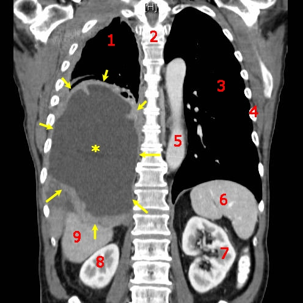
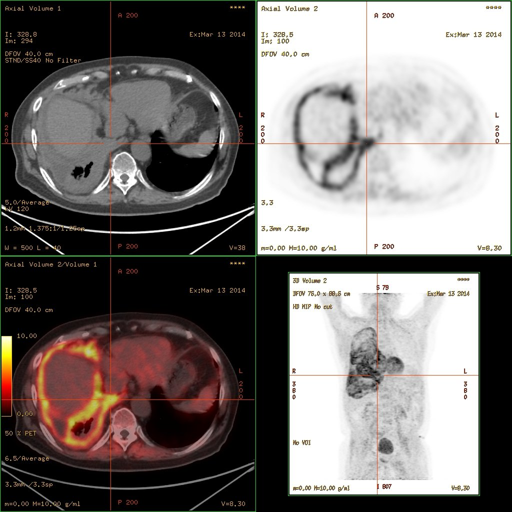

042 — Dày, vôi hóa & u màng phổi / Pleural thickening, plaques & Mesothelioma
Tags: pattern:u-mang-phoi vung:mang-phoi
Mức chắc chắn (certainty): tổng hợp y văn (literature synthesis) — nhóm tự biên từ y văn mở, chưa gắn ca nguyên văn đơn lẻ.
1. Tổng quan — màng phổi dày khi nào + con số
- Màng phổi bình thường < 2 mm, không thấy trên X-quang. Thấy được = bệnh: xơ sau viêm/mủ (fibrothorax), mảng amiăng (plaque), u trung biểu mô (mesothelioma), di căn.
- Ngưỡng: dày khu trú > 10 mm hoặc dày chu vi (rind) + co rút lồng ngực → nghĩ ác tính; mảng amiăng: dày khu trú 2–5 mm, vôi hóa, dọc thành ngực/cơ hoành, thường 2 bên, chừa đỉnh + góc sườn hoành.
- TẠI SAO mesothelioma co rút lồng ngực: u lan tỏa bao bó phổi (rind) + xơ → mất thể tích nửa ngực (khác dịch tự do đè trung thất sang đối diện).
2. Gamut dày màng phổi
- Sau viêm/mủ/lao: dày đều + vôi hóa + tiền sử mủ cũ, ổn định.
- Mảng amiăng: vôi hóa, 2 bên, phơi nhiễm, chừa đỉnh/góc — lành tính nhưng theo dõi mesothelioma.
- Mesothelioma: dày nốt chu vi + tràn dịch + co rút + phơi amiăng 20–40 năm.
- Di căn màng phổi: nốt đa ổ + K nguyên phát đã biết (phổi, vú, buồng trứng).

Sơ đồ dạy học: khối màng phổi phải (sao vàng) + cấu trúc lân cận đánh số. Nguồn: Stevenfruitsmaak, CC BY-SA 4.0.3. Bảng so sánh
| Thực thể (entity) | Hình ảnh điển hình | Chốt vào (rule-in) | Chốt loại (rule-out) | Gợi ý xác nhận |
|---|---|---|---|---|
| Mesothelioma | Dày nốt chu vi + dịch + co rút nửa ngực + amiăng | Rind + co rút + phơi amiăng 20–40 năm | Mảng vôi 2 bên ổn định → amiăng lành | Sinh thiết màng phổi (VATS), PET |
| Mảng amiăng | Vôi hóa 2 bên, chừa đỉnh/góc, không co rút | Vôi hóa + phơi nhiễm + ổn định | Dày nốt tiến triển → mesothelioma | Theo dõi định kỳ |
| Di căn màng phổi | Nốt đa ổ + K nguyên phát | K đã biết + nốt màng phổi mới | Đơn độc không tiền sử → nguyên phát | Dịch màng phổi tế bào học |
| Xơ sau mủ | Dày đều + vôi + tiền sử mủ/lao | Tiền sử rõ + ổn định năm | Tiến triển → u | So phim cũ |

Bắt thuốc lan tỏa theo màng phổi. Nguồn: Hg6996, CC BY 3.0.4. Protocol
- CT cản quang: dày chu vi/nốt + ngấm thuốc + hạch + dịch; đo độ dày điểm lớn nhất (mm).
- PET-CT: lan tỏa bắt mạnh + tìm nguyên phát (di căn) + giai đoạn mesothelioma.
- Sinh thiết VATS là tiêu chuẩn vàng mesothelioma (tế bào học dịch âm tính giả cao).
5. Cạm bẫy
- Mỡ ngoài màng phổi giả dày 2 bên đối xứng — HU mỡ (−100) phân biệt.
- Mảng amiăng chừa đỉnh/góc — dày đỉnh nghĩ lao cũ, không phải amiăng.
- Tế bào học dịch âm tính ≠ loại trừ mesothelioma — sinh thiết mới chốt.
6. Tự lượng giá — Blind Quiz
Ca 1 — Kể tên cấu trúc 1–9 và khối sao vàng là gì.
Bấm để hiện đáp án
- Sao vàng = khối u trung biểu mô màng phổi phải; 1–9 là xương sườn/cột sống/gan/thận/lách (tự đối chiếu giải phẫu cắt ngang) — đọc CT phải định vị được tạng trước khi gọi tên u.
- Nguồn: Stevenfruitsmaak, CC BY-SA 4.0.
Ca 2 — Thợ amiăng 30 năm, dày nốt chu vi + dịch + co rút nửa ngực phải: chẩn đoán + bước tiếp?
Bấm để hiện đáp án
- Mesothelioma: rind + co rút + phơi nhiễm — sinh thiết VATS + PET giai đoạn (đối chiếu ảnh PET mục 3).
Bài liên quan chéo
- 001 – Tổng quan hệ Ngực
- 040 – Tràn dịch màng phổi (dịch + dày màng)
- 041 – Tràn khí màng phổi
Không dùng để chẩn đoán độc lập khi chưa có người hướng dẫn.